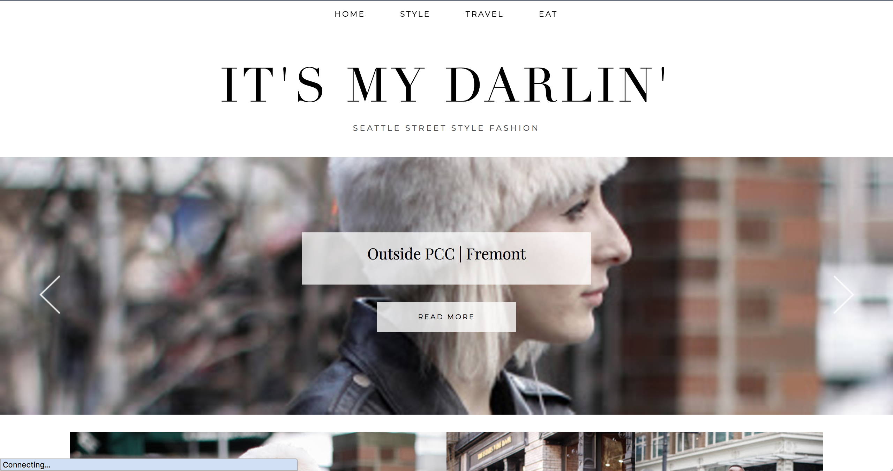
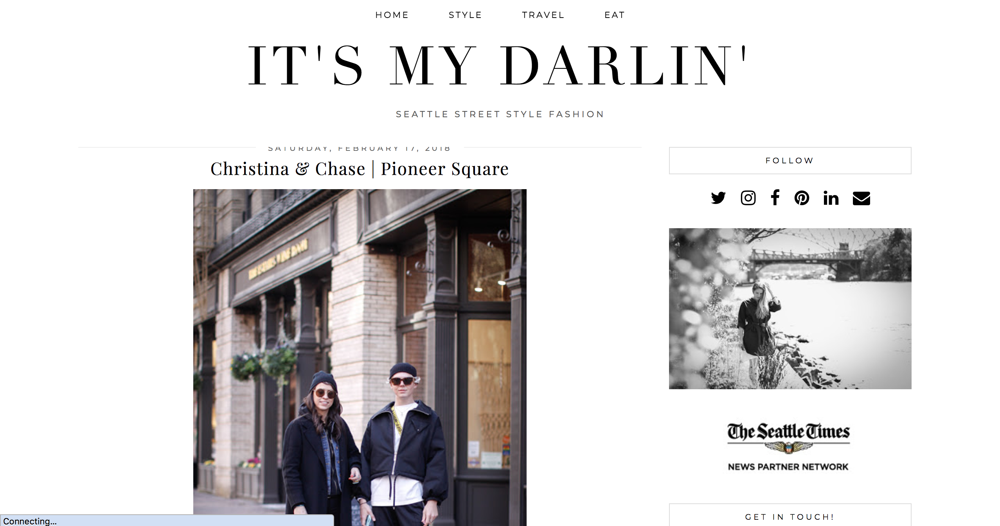
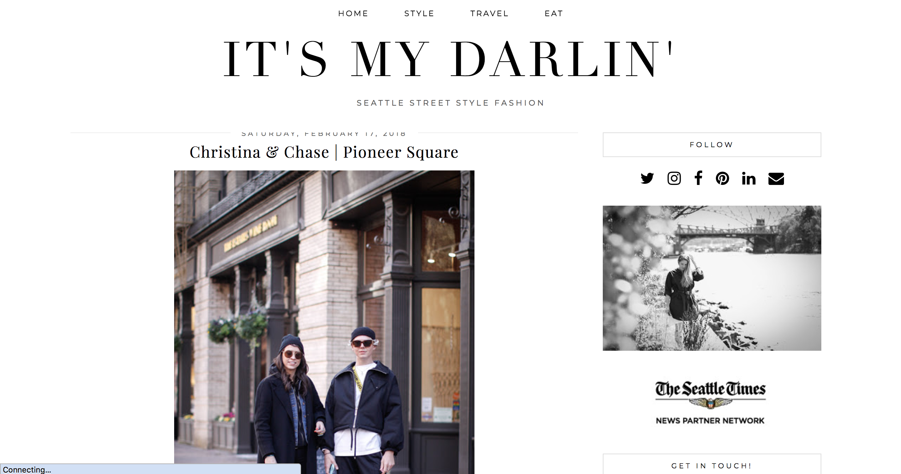
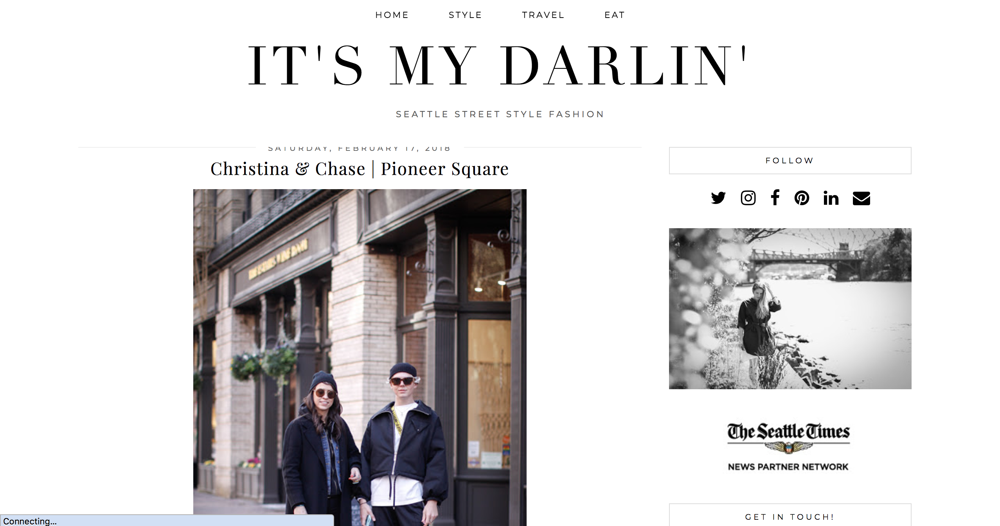

It's My Darlin
Seattle street style blog.
I'm from Seattle, and I've been following this street style photographer's blog for years now. Recently, she updated her site's design to this tile layout, and I can't stand it. Before, she had a typical blog layout with one big column of posts for you to scroll through, but now you have to click on each picture to see that post, making you load another page and then have to re-load the home page to come back and see another post. It looks nice, but the functionality isn't there.

 

